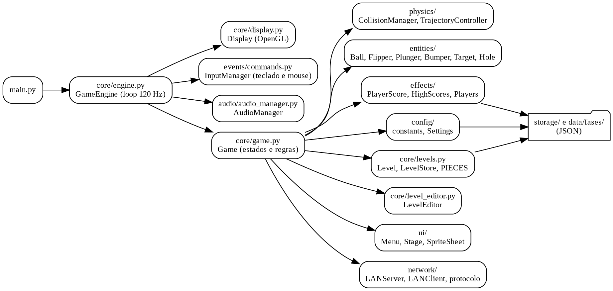
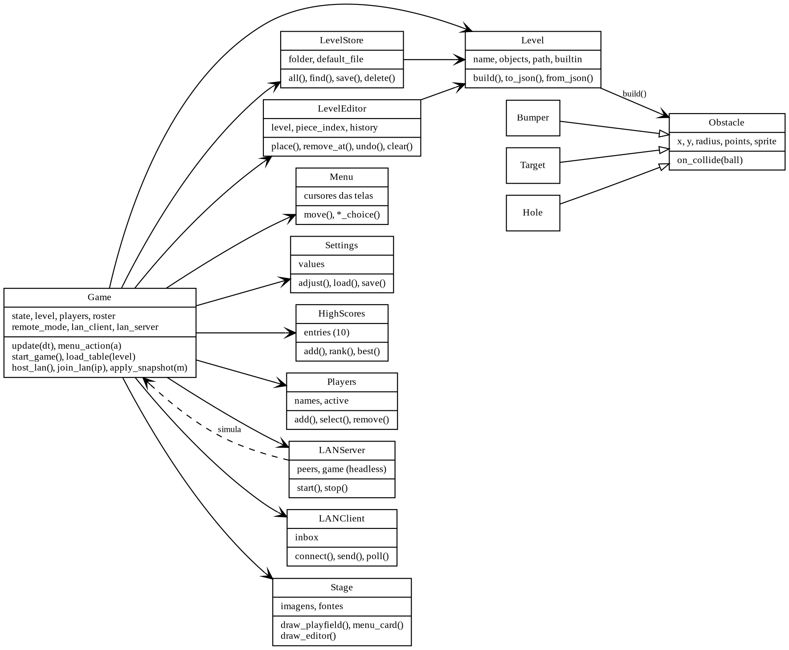
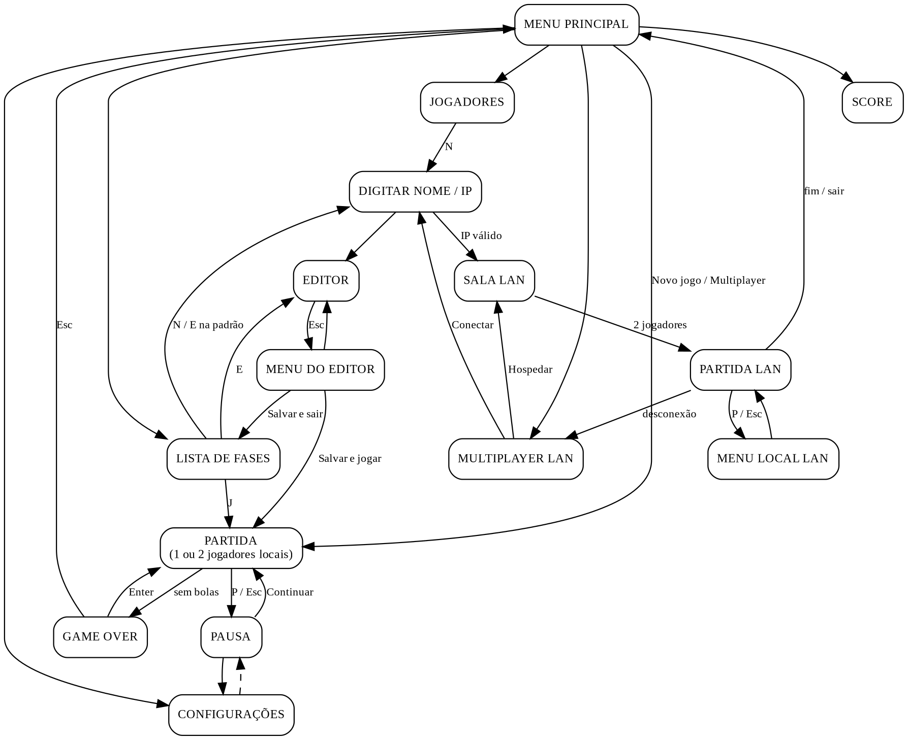
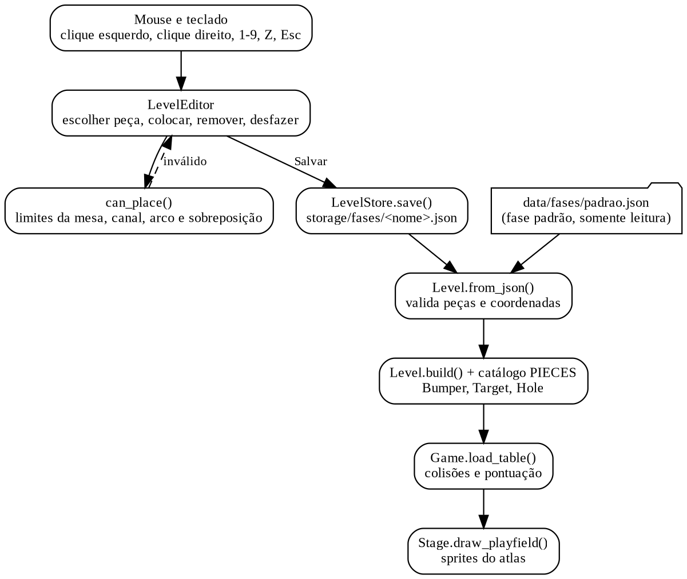
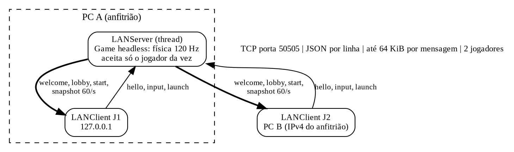

Este documento atualiza o GDD do Pinball TAC III com o que foi efetivamente implementado no
Trabalho 2. O GDD entregue no Trabalho 1 (docs/entrega/GDD_original.docx) continua
válido como registro histórico das regras e da proposta inicial; as seções a seguir, os diagramas e
os requisitos incrementais descrevem a versão atual do código e substituem, para fins de
apresentação, os diagramas do Trabalho 1.
O código-fonte e o histórico de desenvolvimento estão no repositório público
https://github.com/alvaro-star/TAC-III-Pinball.git. Os sprites e efeitos sonoros
foram obtidos de fontes públicas e estão reunidos na pasta
https://drive.google.com/drive/folders/1XCPrGo6UpRIycwQnuBqF42GzMXA1hl-O.
O jogo é escrito em Python 3.12 (compatível com 3.11), com Pygame 2.6 e PyOpenGL 3.1. A mesa é desenhada em uma superfície lógica de 720 × 900 pixels do Pygame e enviada ao OpenGL como textura, no pipeline fixo, sem shaders GLSL próprios. A janela é redimensionável: a mesa mantém a proporção e as faixas laterais recebem o fundo de galáxia repetido em espelho. A física roda em passo fixo de 120 Hz, com subpassos por bola, e a renderização visa 60 quadros por segundo. Os textos usam as fontes livres Exo 2 e Orbitron, incluídas no projeto.
O Quadro 1 resume as funcionalidades entregues e a situação de cada uma na versão atual.
Quadro 1 – Síntese das entregas do Trabalho 2
| Funcionalidade | Situação na versão entregue |
|---|---|
| Editor de fases | Implementado: lista de fases, paleta com 9 peças, posicionamento com o mouse validado, remoção, desfazer, salvar, escolher a fase e jogar. |
| Multiplayer local | Implementado: 2 jogadores no mesmo computador, em turnos alternados. |
| Multiplayer em LAN | Implementado: servidor TCP autoritativo, 2 computadores, turnos com controles isolados e snapshots a 60 por segundo. |
| Jogadores e score | Implementado: cadastro por nome, troca do jogador ativo e tabela com as 10 melhores pontuações, com nome e fase. |
| Menus | Implementados: principal, pausa, configurações, fases, editor, jogadores, score, LAN e game over. |
| Configurações | Implementadas e salvas: som, volumes, velocidade de queda, bolas por jogador e exibição de FPS. |
| Física | Corrigida: subpassos impedem que a bola atravesse paredes; o golpe forte do flipper só ocorre na subida, o que permite segurar a bola. |
| Diagramas | Atualizados: módulos, classes, navegação, fluxo do editor e comunicação em rede. |
| Verificação | Execução gráfica conferida em Linux com OpenGL; validação em Windows e da rede entre 2 computadores físicos pendente. |
Fonte: elaborado pelos autores (2026).
A opção Editor de fases do menu principal abre a lista de fases: a fase PADRÃO e as fases criadas pelos jogadores. Enquanto o cursor percorre a lista, a mesa ao fundo mostra a fase selecionada. A fase escolhida com Enter passa a ser a fase ativa, usada por Novo jogo, Multiplayer e pelo anfitrião de uma partida em LAN. O editor usa a própria mesa como área de trabalho, com uma paleta à esquerda que lista todas as peças com os sprites do atlas.
Quadro 2 – Controles da lista de fases e do editor
| Operação | Controles |
|---|---|
| Escolher a fase ativa | Enter na lista de fases. |
| Jogar a fase | J na lista, ou Salvar e jogar no menu do editor. |
| Criar fase | N, ou a linha + NOVA FASE; pede o nome (até 16 caracteres). |
| Editar fase | E. Na fase PADRÃO, que é somente leitura, cria uma cópia com outro nome. |
| Apagar fase | Delete ou X, pressionado duas vezes para confirmar. |
| Escolher a peça | Teclas 1 a 9, roda do mouse, Tab, Q/E ou clique na paleta. |
| Posicionar | Clique esquerdo. A prévia sob o mouse mostra um anel verde onde a peça cabe e vermelho onde não cabe. |
| Remover | Clique direito sobre a peça. |
| Desfazer | Z (desfaz inclusões, remoções e a limpeza da mesa). |
| Menu do editor | Esc: Continuar editando, Salvar e sair, Salvar e jogar, Limpar mesa e Sair sem salvar. |
Fonte: elaborado pelos autores (2026).
O catálogo PIECES, em modulos/core/levels.py, define as peças que
podem ser posicionadas (Quadro 3). Paredes, flippers, slingshots e o canal de lançamento são fixos.
Quadro 3 – Peças do editor de fases
| Tecla | Peça | Tipo | Raio (px) | Pontos | Sprite |
|---|---|---|---|---|---|
| 1 | Bumper azul | Bumper | 33 | 100 | bumper_blue |
| 2 | Bumper dourado | Bumper | 33 | 100 | bumper_gold |
| 3 | Bumper rosa grande | Bumper | 36 | 100 | bumper_pink |
| 4 | Bumper vermelho | Bumper | 24 | 100 | bumper_red |
| 5 | Bumper azul pequeno | Bumper | 24 | 100 | bumper_blue |
| 6 | Alvo 10 | Target | 24 | 250 | target10 |
| 7 | Alvo 25 | Target | 24 | 250 | target25 |
| 8 | Alvo 50 | Target | 24 | 250 | target50 |
| 9 | Buraco bônus | Hole | 24 | 300 | desenho próprio |
Fonte: elaborado pelos autores (2026).
As fases são arquivos JSON no mesmo formato de mapa usado pelo protótipo que originou o projeto
(data/level1.json, gerado por Level1.create_first_map): as chaves
height, width, layers, name, type
("pinball") e version, com uma camada Obstáculos cuja lista
objects guarda cada peça como {piece, x, y}, por exemplo:
{"layers": [{"name": "Obstáculos",
"objects": [{"piece": "bumper_azul", "x": 284, "y": 342}, ...]}],
"name": "PADRÃO", "type": "pinball", "version": "1.0", "width": 720, "height": 900}
A fase padrão fica em data/fases/padrao.json, é somente leitura e é recriada por
create_default_level() se o arquivo faltar. As fases do editor são gravadas em
storage/fases/; o nome do arquivo é derivado do nome da fase, reduzido a letras
minúsculas, dígitos e sublinhado, o que impede caminhos inseguros, e recebe um sufixo numérico se já
existir. Na leitura, peças desconhecidas ou com coordenadas não numéricas são descartadas e arquivos
inválidos são ignorados com aviso. O JSON é tratado apenas como dados; nenhum código é carregado.
A função can_place() só aceita uma peça de raio r na posição (x, y) quando:
Não há limite fixo de peças nem de buracos: o limite é o espaço livre da mesa.
Dois jogadores usam o mesmo computador e alternam a cada bola perdida. O jogador 1 é o jogador ativo e o jogador 2 é o próximo jogador cadastrado.
A arquitetura cliente-servidor segue o desenho proposto pela equipe para o Trabalho 2. O
computador anfitrião abre um servidor TCP IPv4 na porta 50505 (LANServer), executado
em uma thread com selectors, e conecta a ele o seu próprio cliente
(LANClient) pelo endereço 127.0.0.1, como jogador 1. O convidado digita o IPv4 do
anfitrião e entra como jogador 2. Cada cliente envia o nome do jogador cadastrado e a partida começa
sozinha quando os dois estão na sala, com a fase escolhida, as bolas por jogador e a velocidade de
queda do anfitrião.
O modelo é autoritativo: apenas o servidor executa a física, em uma instância de
Game sem desenho, a 120 Hz, e decide colisões, pontos, vidas e turnos. Os clientes
enviam só o estado das teclas e o comando de lançar; o servidor aplica apenas os do jogador da vez.
Cerca de 60 vezes por segundo o servidor envia um snapshot com estado, placar, bolas, flippers,
lançador, mensagens, acendimentos das peças e os sons ocorridos, de modo que os dois computadores
mostram e tocam o mesmo. No cliente, Game.remote_mode desliga a simulação local.
As mensagens são objetos JSON em UTF-8, uma por linha, com no máximo 64 KiB (Quadro 4). Linhas inválidas são ignoradas; uma mensagem maior que o limite encerra a conexão.
Quadro 4 – Mensagens do protocolo LAN
| Mensagem | Sentido | Conteúdo |
|---|---|---|
| hello | cliente → servidor | Nome do jogador cadastrado. |
| input | cliente → servidor | Teclas seguradas: flipper esquerdo, direito e lançador. |
| launch | cliente → servidor | Soltou o Espaço (lançar a bola). |
| welcome | servidor → cliente | Número do jogador (0 = J1, 1 = J2). |
| lobby | servidor → clientes | Jogadores na sala. |
| start | servidor → clientes | Nomes e peças da fase do anfitrião. |
| snapshot | servidor → clientes | Estado visual da partida e sons. |
| error | servidor → cliente | Ex.: SALA CHEIA para um terceiro computador. |
| disconnected | servidor → cliente | O outro jogador saiu da partida. |
Fonte: elaborado pelos autores (2026).
A opção Mudar de jogador lista os jogadores cadastrados com o recorde de cada um. N cadastra um
novo nome (até 12 caracteres, em maiúsculas), Enter escolhe com qual nome jogar e Delete
pressionado duas vezes apaga um jogador; sempre resta pelo menos um. Os jogadores ficam em
storage/players.json.
A tela Score mostra as 10 melhores pontuações, gravadas em storage/scores.json com
nome, fase e data, e destaca as do jogador ativo. No game over o jogo informa o vencedor ou o
empate e, quando houver, a posição do novo recorde. As regras de pontuação são: bumper 100 pontos,
alvo 250, buraco bônus 300 e slingshot 25; combo de +500 a cada 6 bumpers; pontuação em dobro por
12 segundos após 3 alvos; multiball após 6 alvos.
Todas as telas são navegadas com W/S ou as setas, Enter para confirmar e Esc para voltar. A tela
atual é o atributo Game.state e as transições ficam em Game.menu_action().
A classe Menu guarda apenas as opções e os cursores, sem depender do Pygame, e
Stage.menu_card() desenha os cartões; listas longas rolam para manter a seleção
visível. O Quadro 5 descreve cada tela.
Quadro 5 – Telas e recursos
| Tela | Recursos implementados |
|---|---|
| Menu principal | Novo jogo, Multiplayer, Multiplayer LAN, Editor de fases, Mudar de jogador, Score, Configurações e Sair; mostra o jogador ativo e a fase. |
| Configurações | Som, volume da música e dos efeitos (0 a 100%, passo 5), velocidade de queda (50 a 150%, passo 10), bolas por jogador (1 a 5) e mostrar FPS; salvas em storage/settings.json. Abertas pela pausa, voltam para a pausa. |
| Fases e editor | Lista de fases, criação, edição, cópia da padrão, exclusão e teste (seção 3). |
| Jogadores e score | Cadastro e troca de jogador; 10 melhores pontuações (seção 5). |
| Multiplayer LAN | Hospedar partida, Conectar a um IP e Voltar; sala de espera com os nomes; menu local durante a partida. |
| Pausa | Continuar, Reiniciar partida, Configurações, Menu principal e Sair do jogo. |
| Game over | Placar final, vencedor ou empate e novo recorde; Enter joga de novo (em LAN, volta ao menu) e Esc volta ao menu. |
Fonte: elaborado pelos autores (2026).
Quadro 6 – Padrões e decisões aplicados no código
| Padrão ou princípio | Aplicação no código |
|---|---|
| Fábrica orientada a dados | O catálogo PIECES associa cada peça à classe, raio, pontos e sprite; Level.build() cria os objetos Bumper, Target e Hole sem duplicar a lógica de colisão. |
| Repositório simples | LevelStore, Settings, HighScores e Players isolam a leitura, validação e gravação dos JSON. |
| Máquina de estados | Game.state e Game.menu_action() modelam menus, editor, LAN, pausa e partida. Não é o padrão State do GoF com uma classe por estado. |
| Histórico de desfazer | LevelEditor.history registra inclusões, remoções e limpezas para o comando Z. |
| Cliente-servidor autoritativo | LANServer simula as regras; LANClient envia teclas e recebe snapshots para desenhar. |
| Separação de responsabilidades | InputManager traduz eventos; Game aplica regras; a física trata colisões; Stage desenha; AudioManager toca sons. Menus, editor, fases e rede não dependem da janela e por isso são testáveis. |
| Passo fixo com subpassos | FIXED_DT = 1/120 s desacopla a física da taxa de quadros; cada bola avança no máximo meio raio por subpasso. |
Fonte: elaborado pelos autores (2026).
O OpenGL continua no pipeline fixo (glOrtho, glBegin e textura do
quadro em modulos/core/display.py). O fundo das faixas laterais usa uma segunda
textura com repetição espelhada (GL_MIRRORED_REPEAT). Nenhum shader GLSL foi
acrescentado.
Quadro 7 – Requisitos incrementais e situação
| ID | Critério verificável | Situação |
|---|---|---|
| RF14 | Criar, editar (posicionar, remover, desfazer, limpar), nomear, salvar, apagar e testar fases pela interface. | Atendido. |
| RF15 | Aplicar as peças da fase às colisões, à pontuação e à renderização. | Atendido. |
| RF16 | Oferecer menus de novo jogo, multiplayer local e LAN, editor, jogadores, score, configurações e sair. | Atendido. |
| RF17 | Persistir as configurações e a fase escolhida; escolher a fase e o número de jogadores. | Atendido. |
| RF18 | Hospedar e conectar 2 jogadores via IPv4/TCP em LAN. | Implementado; validação entre 2 computadores pendente. |
| RF19 | Aceitar comandos de jogo apenas do jogador da vez. | Atendido. |
| RF20 | Calcular física, pontos e vidas só no servidor e enviar snapshots aos clientes. | Atendido. |
| RF21 | Tratar desconexão encerrando a partida e avisando o outro jogador. | Atendido. |
| RF22 | Cadastrar jogadores pelo nome e escolher o jogador ativo. | Atendido. |
| RF23 | Registrar o score por jogador e por fase. | Atendido. |
| RNF6 | Fases JSON validadas, nomes de arquivo seguros e peças inválidas descartadas. | Atendido. |
| RNF7 | Mensagens TCP JSON limitadas a 64 KiB e no máximo 2 jogadores. | Atendido. |
| RNF8 | Multiplayer restrito a LAN confiável; porta 50505 sem exposição pública. | Documentado no guia de execução. |
| RNF9 | Execução em Windows com Python 3.11–3.12, Pygame 2.6 e PyOpenGL 3.1. | Conferido em Linux; Windows pendente. |
| RNF10 | Arquitetura em módulos documentados e física a 120 Hz. | Atendido. |
Fonte: elaborado pelos autores (2026).
Os diagramas foram gerados com Graphviz a partir da arquitetura atual.
Figura 1 – Organização dos módulos

Fonte: elaborado pelos autores (2026).
Figura 2 – Classes principais e associações

Fonte: elaborado pelos autores (2026).
Figura 3 – Telas e transições

Fonte: elaborado pelos autores (2026).
Figura 4 – Do editor ao arquivo JSON e à partida

Fonte: elaborado pelos autores (2026).
Figura 5 – Comunicação cliente-servidor em LAN

Fonte: elaborado pelos autores (2026).
Quadro 8 – Arquivos e responsabilidades no Trabalho 2
| Arquivo ou pasta | Responsabilidade |
|---|---|
| modulos/core/game.py | Estados, menus, regras da partida e lado cliente da LAN. |
| modulos/core/engine.py | Loop de passo fixo; em LAN, recebe mensagens e envia teclas. |
| modulos/core/display.py | Janela OpenGL, proporção da mesa, fundo repetido e conversão do mouse. |
| modulos/core/levels.py; data/fases/padrao.json | Catálogo de peças, formato JSON, validação e LevelStore. |
| modulos/core/level_editor.py | Editor: peça escolhida, posicionar, remover, desfazer e paleta. |
| modulos/network/lan.py; protocol.py | Servidor e cliente TCP; formato das mensagens. |
| modulos/ui/menu.py; stage.py | Opções e cursores dos menus; desenho da mesa, HUD, menus e editor. |
| modulos/effects/highscores.py; players.py | Score e jogadores cadastrados. |
| modulos/config/settings.py | Configurações salvas e validadas. |
| modulos/events/commands.py | Teclado, mouse e digitação de nomes e IP. |
| assets/fonts/ | Fontes Exo 2 e Orbitron, com as licenças OFL. |
| docs/entrega/ | Guia de execução e roteiro de testes manuais. |
Fonte: elaborado pelos autores (2026).
A execução gráfica foi conferida em Linux, com Python 3.12.3, Pygame 2.6.1, PyOpenGL 3.1.10 e renderização OpenGL: menus, editor com o mouse, fontes e fundo repetido.
Ainda precisam de validação manual: a execução em Windows, o desempenho mínimo de 30 quadros por segundo nesse sistema e a partida em LAN entre dois computadores físicos, que depende da liberação da porta 50505 no firewall.
A entrega contém o código, o atlas de sprites, os sons, as fontes e os diagramas. O
ponto de entrada é main.py e as dependências estão em requirements.txt. O
guia de execução no VS Code, inclusive da partida em LAN, está em
docs/entrega/GUIA_VSCODE_WINDOWS.md e o roteiro de testes manuais em
docs/entrega/TESTE_MANUAL_WINDOWS.md.